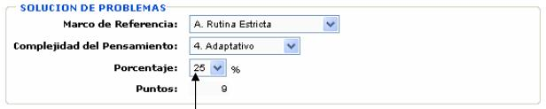
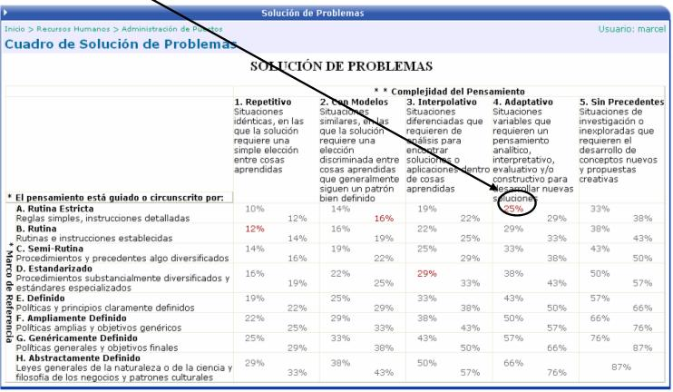

Esta es la tabla (matriz) de solución de problemas que contiene los puntajes de cada uno de los aspectos que se toman en cuenta a la hora de realizar las valoraciones de los puestos, según se haga la escogencia de los mismos.
Por ejemplo, cuando se esta valorando un puesto y en la sección de Solución de Problemas se escogen los siguientes aspectos:

el valor que le va a desplegar en Porcentaje, es el correspondiente a esa combinación, tal y como se puede ver en la tabla:

El valor que se despliega en Puntos se toma de la tabla auxiliar para la Solución de Problemas.